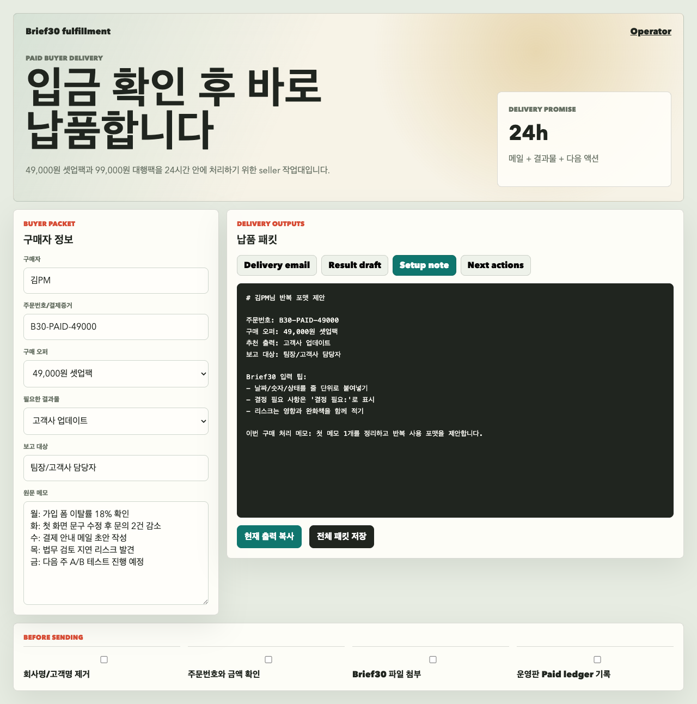

01 Executive brief
이번 주 핵심은 전환율 급락과 로그인 오류 대응입니다
고객사 A 대시보드에서 전환율 급락이 확인되었고, 앱 배포 후 로그인 오류 7건이 접수되었습니다. 제휴 캠페인은 소재 승인과 법무 확인이 지연되어 다음 주 실험 일정에 영향을 줄 수 있습니다.
Sample delivery packet
아래는 익명화한 업무 메모를 받았을 때 전달되는 팀 브리핑 샘플입니다. 실제 납품은 팀 상황에 맞춰 문장, 리스크, 담당자, 다음 액션을 조정합니다.

Anonymized input
회사명, 고객명, 실명, 금액, 계정 정보는 지운 뒤 업무 사실만 남깁니다.
월: 고객사 A 대시보드 지표 이상, 전환율 급락 화: 앱 배포 후 로그인 오류 7건, CS 답변 늦음 수: 제휴 캠페인 소재 승인 지연, 법무 확인 필요 목: 이번 주 리포트 초안 없음, 팀장이 금요일 오전 요청 금: 다음 주 실험 2개, 담당자와 일정 다시 정리 필요
01 Executive brief
고객사 A 대시보드에서 전환율 급락이 확인되었고, 앱 배포 후 로그인 오류 7건이 접수되었습니다. 제휴 캠페인은 소재 승인과 법무 확인이 지연되어 다음 주 실험 일정에 영향을 줄 수 있습니다.
로그인 오류가 재현되면 고객사 리포트보다 장애 공지가 먼저 나가야 합니다.
법무 확인 완료 전에는 캠페인 운영 반영을 보류하고 대체 소재를 준비합니다.
전환율, 로그인 오류, 제휴 캠페인 지연을 한 장 브리프로 묶어 공유합니다.
02 Action board
03 Four-week rhythm
한 번 정리하고 끝내지 않고, 팀이 다시 쓸 수 있는 보고 리듬을 만듭니다.
Approval close